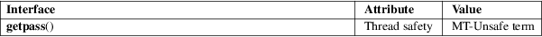

getpass − get a password
Standard C library (libc, −lc)
#include <unistd.h>
[[deprecated]] char *getpass(const char *prompt);
Feature Test Macro Requirements for glibc (see feature_test_macros(7)):
getpass():
Since glibc 2.2.2:
_XOPEN_SOURCE && ! (_POSIX_C_SOURCE >= 200112L)
|| /* glibc >= 2.19: */ _DEFAULT_SOURCE
|| /* glibc <= 2.19: */ _BSD_SOURCE
Before glibc 2.2.2:
none
This function is obsolete. Do not use it. See NOTES. If you want to read input without terminal echoing enabled, see the description of the ECHO flag in termios(3).
The getpass() function opens /dev/tty (the controlling terminal of the process), outputs the string prompt, turns off echoing, reads one line (the "password"), restores the terminal state and closes /dev/tty again.
The function getpass() returns a pointer to a static buffer containing (the first PASS_MAX bytes of) the password without the trailing newline, terminated by a null byte ('\0'). This buffer may be overwritten by a following call. On error, the terminal state is restored, errno is set to indicate the error, and NULL is returned.
|
ENXIO |
The process does not have a controlling terminal. |
/dev/tty
For an explanation of the terms used in this section, see attributes(7).

None.
Version 7 AT&T UNIX. Present in SUSv2, but marked LEGACY. Removed in POSIX.1-2001.
You should use instead readpassphrase(3bsd), provided by libbsd.
In the GNU C library implementation, if /dev/tty cannot be opened, the prompt is written to stderr and the password is read from stdin. There is no limit on the length of the password. Line editing is not disabled.
According to SUSv2, the value of PASS_MAX must be defined in <limits.h> in case it is smaller than 8, and can in any case be obtained using sysconf(_SC_PASS_MAX). However, POSIX.2 withdraws the constants PASS_MAX and _SC_PASS_MAX, and the function getpass(). The glibc version accepts _SC_PASS_MAX and returns BUFSIZ (e.g., 8192).
The calling process should zero the password as soon as possible to avoid leaving the cleartext password visible in the process’s address space.
crypt(3)